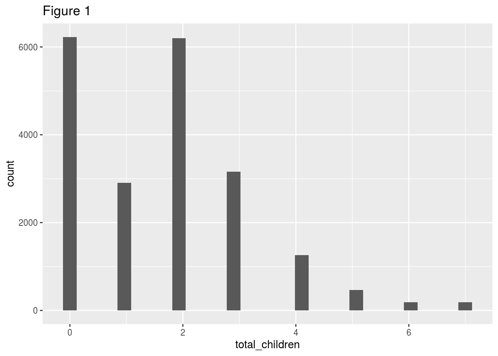
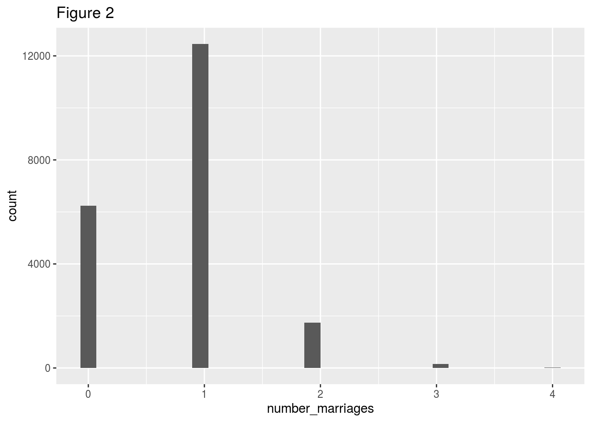
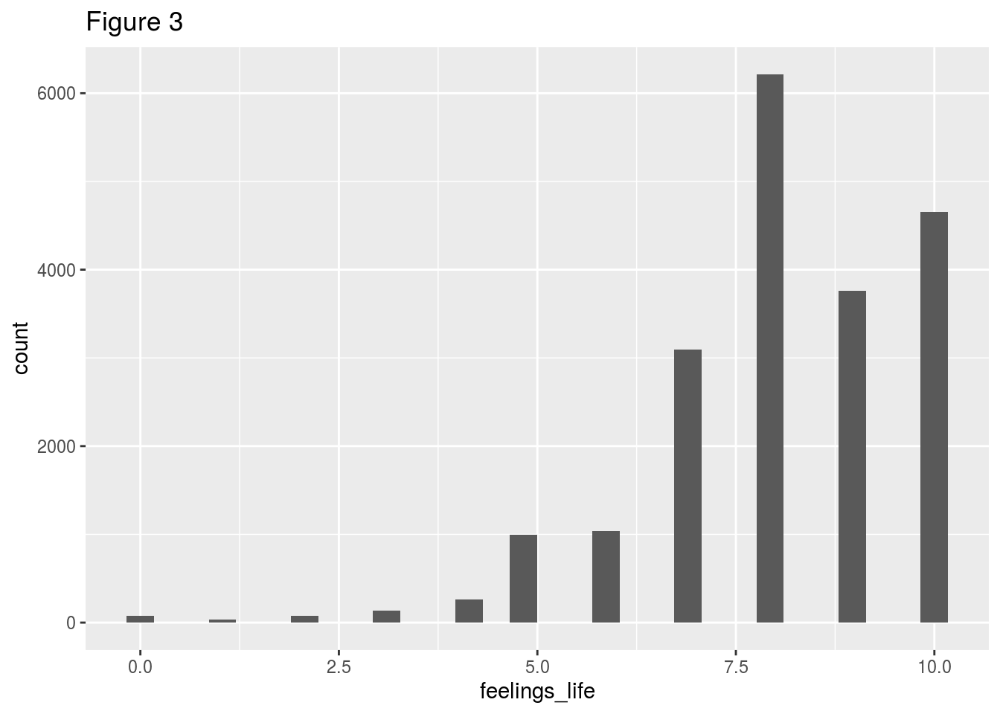
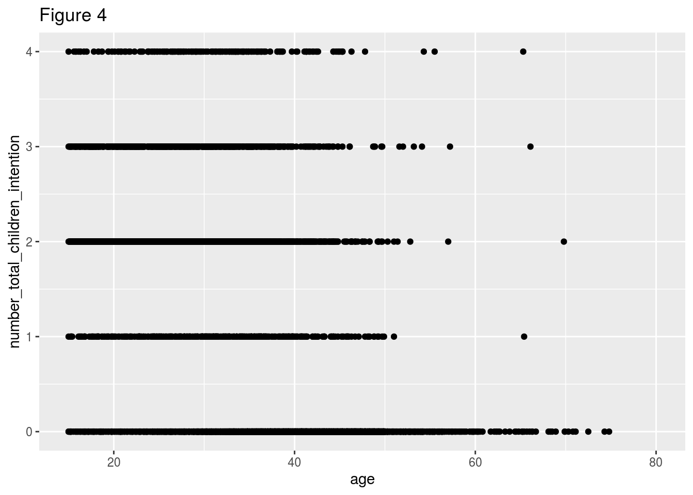
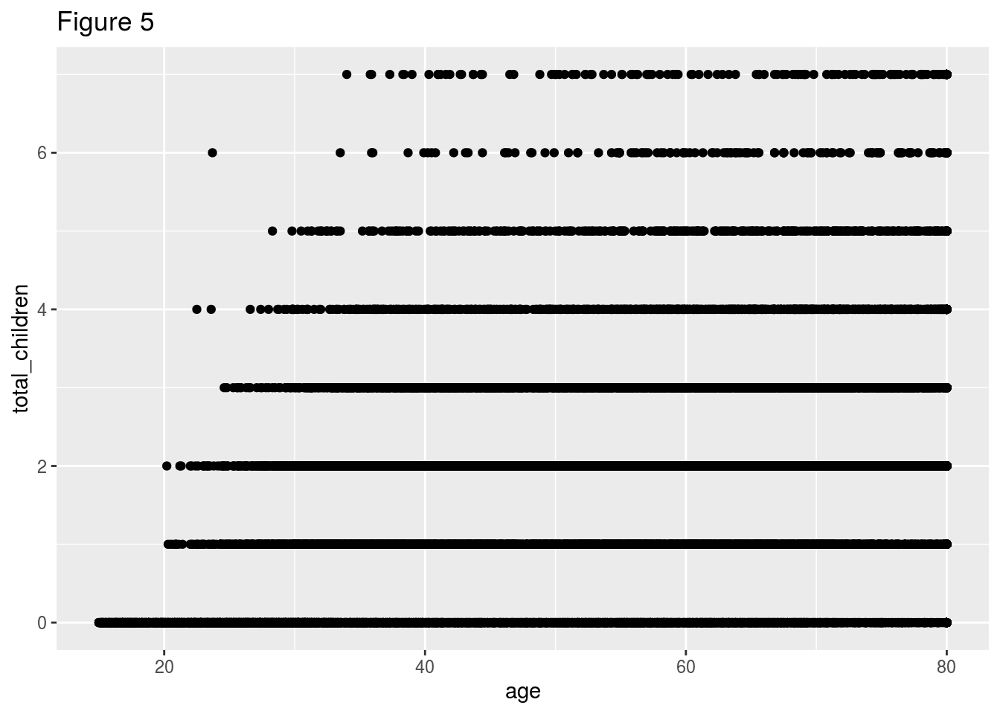
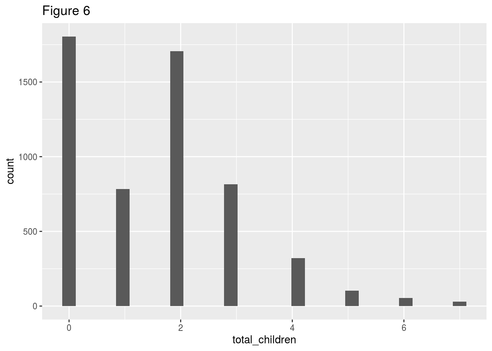
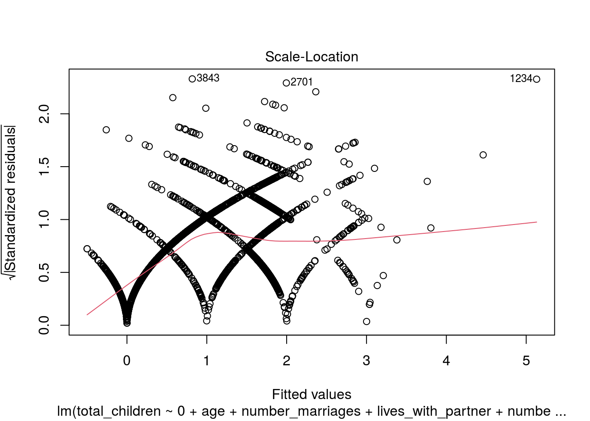
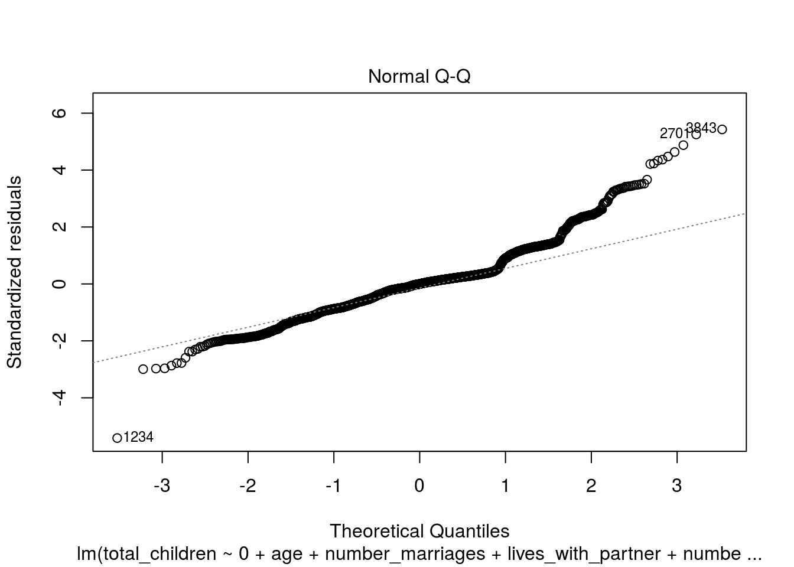
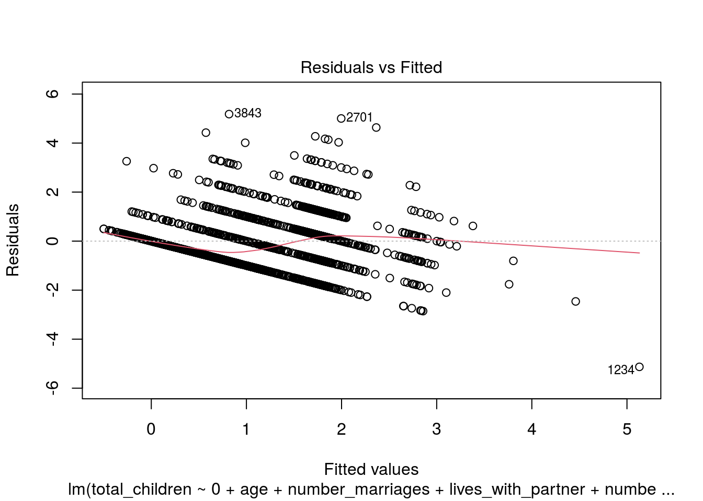

Ziru NIE, 1004158591 Yida WANG, 1005121342 Aochen HU, 1004148996 Yuxin DU, 1004174350 #Date 2020/10/20
Nowadays, the falling fertility rate has been a primary concern for many developed countries. Low fertility rate leads to an unhealthy distribution of labour force and henceforth will result in market disequilibrium. This research focuses on the underlying factors affecting the number of children in each household in Canada. In the following research, the dependent variable of interest is the total number of children for Canadian households, which we conduct multiple linear regression of it concerning some independent variables. Although there is a dispersion of the regression results between Canada and the province of Ontario, we observe similar relationships of what factors affect the total number of children except for the family income. The total number of children is positively affected by age, the number of marriages, live with partner and life feelings. If people live with their partners or people living in non-census metropolitan areas (non-CMAs), these variables also result in a higher total number of children. However, if the respondents are male or intend to have more children, the total number of children is relatively lower.
The total number of children measures the number of children a family in Canada has during their childbearing years. Note that many factors can affect the total number of children and they are subject to subjectivity.
Prior literature discussed the relationships of the total number of children with income level, age of the couple, number of children the couple intends to have, and the urban-rural origin (Norville et al, 2003) for the study of fertility rate. They have found that younger couples tend to choose childlessness. Moreover, the fertility rate is also affected by the times of marriages because the time spent between marriages is the time lost for reproduction women. Scholars have also discussed that partnership and the number of children have strong associations (Grundy et al, 2019).
Therefore, we include the above independent variables into our analysis and also the variable of if people are living with their partners because they may have more children as his or her partner is not out of reach. Henceforth provides couples with the opportunity to have more children.
The remainder of this paper is organized as follows. In Section “Data”, we discuss the independent variables used to conduct multiple linear regression and why we choose them. Section “Model” specifies the R code and the regression results. Section “Results” analyzes the regression tables, figures, and intuitions. Section “Discussion” concludes. Section “Weaknesses” discusses the weaknesses of this study. Section “Next Steps” discusses what future study should focus on.
The General Social Survey data was collected through the CHASS website of the University of Toronto. They used a stratified sampling method to divide people in Canada by the geographic areas (i.e. provinces) as of the user guide suggests. The data was cleaned by adapting the gss_cleaning.R provided by Rohan and Caetano. The target population is set as all households in Canadian provinces except Yukon, Nunavut, Northwest and full-time residents of institutions. The frame population is the lists of telephone numbers in use available to Statistics Canada according to GSS31_User_Guide. The survey data was found by conducting telephone survey. The overall response rate for the 2017 GSS was 52.4%. Therefore, it may subject to non-response errors.
Our dependent variable of interest is the total number of children for Canadian households. We henceforth include independent variables of: age, family income, number of marriages, dummy variable of if the respondents is living with their partners, number of total children they are intended to have, dummy variable of if the respondents are male, dummy variable of which type of counties does the respondents live in, and their feelings of lives.
To study the number of children that residents in Canada have, we reckon it has a relationship with the ages of the respondents. The older they are, the more children they may have. Number of marriages also play a significant role in the number of children since people may want to have children with each of their partners (if applicable). Moreover, if the respondent is living with his or her partner, they may have more children as his or her partner is not out of reach and it provides the couples the opportunity to have more children. It is not hard to understand that if the respondents have the intentions to have more child and they are happy with their lives, the number of children should be higher. On the other hand, we suggest that people who live in census metropolitan areas (CMAs) could have lower number of children than people who live in non CMA areas. However, we are not sure how does family income affect the number of children since lots of people today with higher income tend to have less children, but at the same time, they are more affordable to have more children. We also include the dummy variable of if the respondents are male because people may also have children if they have not married before and the fathers may not even know they have children. Therefore, it could be the case that female respondents have more children than male respondents.
In the following session, we will discuss which variables affect the number of children in Canada. Moreover, to test the robustness of our regression, we also conduct the regression on residents in Ontario, Canada.
## `stat_bin()` using `bins = 30`. Pick better value with `binwidth`.
## Warning: Removed 19 rows containing non-finite values (stat_bin).
## `stat_bin()` using `bins = 30`. Pick better value with `binwidth`.
## `stat_bin()` using `bins = 30`. Pick better value with `binwidth`.
## Warning: Removed 271 rows containing non-finite values (stat_bin).
## Warning: Removed 12202 rows containing missing values (geom_point).
## Warning: Removed 19 rows containing missing values (geom_point).
##
## Call:
## lm(formula = total_children ~ 0 + age + number_marriages + lives_with_partner +
## number_total_children_intention + has_grandchildren + is_male +
## pop_center + feelings_life, data = df)
##
## Residuals:
## Min 1Q Median 3Q Max
## -4.8236 -0.6599 -0.0219 0.3744 6.1324
##
## Coefficients:
## Estimate
## age 0.024601
## number_marriages 0.805892
## lives_with_partnerNo -0.244006
## lives_with_partnerYes 0.292538
## number_total_children_intention -0.204994
## has_grandchildrenYes 0.968771
## is_male -0.073288
## pop_centerPrince Edward Island 0.067383
## pop_centerRural areas and small population centres (non CMA/CA) 0.261311
## feelings_life 0.020867
## Std. Error
## age 0.001543
## number_marriages 0.024086
## lives_with_partnerNo 0.081016
## lives_with_partnerYes 0.090309
## number_total_children_intention 0.011316
## has_grandchildrenYes 0.070211
## is_male 0.022432
## pop_centerPrince Edward Island 0.064468
## pop_centerRural areas and small population centres (non CMA/CA) 0.030494
## feelings_life 0.007199
## t value
## age 15.939
## number_marriages 33.459
## lives_with_partnerNo -3.012
## lives_with_partnerYes 3.239
## number_total_children_intention -18.115
## has_grandchildrenYes 13.798
## is_male -3.267
## pop_centerPrince Edward Island 1.045
## pop_centerRural areas and small population centres (non CMA/CA) 8.569
## feelings_life 2.899
## Pr(>|t|)
## age < 2e-16 ***
## number_marriages < 2e-16 ***
## lives_with_partnerNo 0.00260 **
## lives_with_partnerYes 0.00120 **
## number_total_children_intention < 2e-16 ***
## has_grandchildrenYes < 2e-16 ***
## is_male 0.00109 **
## pop_centerPrince Edward Island 0.29595
## pop_centerRural areas and small population centres (non CMA/CA) < 2e-16 ***
## feelings_life 0.00376 **
## ---
## Signif. codes: 0 '***' 0.001 '**' 0.01 '*' 0.05 '.' 0.1 ' ' 1
##
## Residual standard error: 1.012 on 8319 degrees of freedom
## (12273 observations deleted due to missingness)
## Multiple R-squared: 0.6635, Adjusted R-squared: 0.6631
## F-statistic: 1641 on 10 and 8319 DF, p-value: < 2.2e-16
## `summarise()` ungrouping output (override with `.groups` argument)
## # A tibble: 5 x 2
## region n
## <chr> <int>
## 1 Atlantic region 4564
## 2 British Columbia 2522
## 3 Ontario 5621
## 4 Prairie region 4073
## 5 Quebec 3822
## `stat_bin()` using `bins = 30`. Pick better value with `binwidth`.
## Warning: Removed 5 rows containing non-finite values (stat_bin).
##
## Call:
## lm(formula = total_children ~ 0 + age + number_marriages + lives_with_partner +
## number_total_children_intention + is_male + pop_center +
## feelings_life + income_family, data = df2)
##
## Residuals:
## Min 1Q Median 3Q Max
## -5.0657 -0.5697 0.0102 0.3063 5.1475
##
## Coefficients:
## Estimate
## age 0.019197
## number_marriages 0.932043
## lives_with_partnerNo -0.100767
## lives_with_partnerYes 0.296657
## number_total_children_intention -0.204157
## is_male -0.064552
## pop_centerRural areas and small population centres (non CMA/CA) 0.217729
## feelings_life 0.014149
## income_family$125,000 and more 0.026032
## income_family$25,000 to $49,999 0.138007
## income_family$50,000 to $74,999 -0.005275
## income_family$75,000 to $99,999 0.053629
## income_familyLess than $25,000 -0.073840
## Std. Error
## age 0.002686
## number_marriages 0.045675
## lives_with_partnerNo 0.153648
## lives_with_partnerYes 0.173318
## number_total_children_intention 0.020018
## is_male 0.040155
## pop_centerRural areas and small population centres (non CMA/CA) 0.074398
## feelings_life 0.012706
## income_family$125,000 and more 0.065209
## income_family$25,000 to $49,999 0.077913
## income_family$50,000 to $74,999 0.074973
## income_family$75,000 to $99,999 0.076640
## income_familyLess than $25,000 0.085129
## t value
## age 7.146
## number_marriages 20.406
## lives_with_partnerNo -0.656
## lives_with_partnerYes 1.712
## number_total_children_intention -10.199
## is_male -1.608
## pop_centerRural areas and small population centres (non CMA/CA) 2.927
## feelings_life 1.114
## income_family$125,000 and more 0.399
## income_family$25,000 to $49,999 1.771
## income_family$50,000 to $74,999 -0.070
## income_family$75,000 to $99,999 0.700
## income_familyLess than $25,000 -0.867
## Pr(>|t|)
## age 1.19e-12 ***
## number_marriages < 2e-16 ***
## lives_with_partnerNo 0.51200
## lives_with_partnerYes 0.08710 .
## number_total_children_intention < 2e-16 ***
## is_male 0.10806
## pop_centerRural areas and small population centres (non CMA/CA) 0.00346 **
## feelings_life 0.26557
## income_family$125,000 and more 0.68978
## income_family$25,000 to $49,999 0.07664 .
## income_family$50,000 to $74,999 0.94391
## income_family$75,000 to $99,999 0.48415
## income_familyLess than $25,000 0.38582
## ---
## Signif. codes: 0 '***' 0.001 '**' 0.01 '*' 0.05 '.' 0.1 ' ' 1
##
## Residual standard error: 0.9556 on 2325 degrees of freedom
## (3283 observations deleted due to missingness)
## Multiple R-squared: 0.6687, Adjusted R-squared: 0.6669
## F-statistic: 361 on 13 and 2325 DF, p-value: < 2.2e-16
##
## Call:
## lm(formula = total_children ~ 0 + age + number_marriages + lives_with_partner +
## number_total_children_intention + pop_center, data = df2)
##
## Residuals:
## Min 1Q Median 3Q Max
## -5.1306 -0.5805 -0.0004 0.3070 5.1823
##
## Coefficients:
## Estimate
## age 0.018041
## number_marriages 0.956434
## lives_with_partnerNo 0.036557
## lives_with_partnerYes 0.453781
## number_total_children_intention -0.207499
## pop_centerRural areas and small population centres (non CMA/CA) 0.214816
## Std. Error
## age 0.002644
## number_marriages 0.043568
## lives_with_partnerNo 0.097487
## lives_with_partnerYes 0.123060
## number_total_children_intention 0.019757
## pop_centerRural areas and small population centres (non CMA/CA) 0.074207
## t value
## age 6.823
## number_marriages 21.953
## lives_with_partnerNo 0.375
## lives_with_partnerYes 3.687
## number_total_children_intention -10.502
## pop_centerRural areas and small population centres (non CMA/CA) 2.895
## Pr(>|t|)
## age 1.13e-11 ***
## number_marriages < 2e-16 ***
## lives_with_partnerNo 0.707704
## lives_with_partnerYes 0.000232 ***
## number_total_children_intention < 2e-16 ***
## pop_centerRural areas and small population centres (non CMA/CA) 0.003829 **
## ---
## Signif. codes: 0 '***' 0.001 '**' 0.01 '*' 0.05 '.' 0.1 ' ' 1
##
## Residual standard error: 0.9558 on 2353 degrees of freedom
## (3262 observations deleted due to missingness)
## Multiple R-squared: 0.6677, Adjusted R-squared: 0.6669
## F-statistic: 788.1 on 6 and 2353 DF, p-value: < 2.2e-16
## 17 20 21 25 30 32 51 70 76 89 92 100 112 123 136 151
## 3 5 6 7 9 11 17 20 23 27 28 31 37 42 49 55
## 169 173 175 177 186 191 193 194 207 221 222 232 234 239 244 266
## 62 66 67 68 72 74 76 77 83 88 89 93 94 96 99 106
## 270 279 292 293 296 310 320 335 336 349 353 359 365 367 368 386
## 108 114 120 121 123 129 133 138 139 146 147 150 151 153 154 157
## 401 404 405 411 423 430 434 440 444 451 452 472 479 482 491 493
## 163 165 166 167 172 176 177 180 183 184 185 190 195 196 201 203
## 497 498 507 508 513 535 542 544 559 562 576 580 597 617 621 622
## 204 205 207 208 211 218 221 222 232 234 240 242 248 253 254 255
## 628 630 639 641 661 662 663 664 669 674 675 683 690 697 712 715
## 257 258 260 261 269 270 271 272 275 277 278 280 281 284 290 291
## 718 722 724 725 729 732 733 737 739 743 753 767 780 792 796 801
## 293 294 296 297 299 301 302 305 306 307 309 315 321 324 325 327
## 808 813 817 830 839 847 851 852 855 856 860 861 862 865 870 877
## 333 335 337 340 343 347 351 352 353 354 355 356 357 358 360 364
## 885 886 889 901 905 923 925 927 936 944 945 949 950 953 960 967
## 367 368 369 372 373 377 378 380 384 387 388 392 393 395 399 402
## 968 970 971 973 999 1002 1007 1010 1027 1028 1040 1042 1052 1066 1068 1074
## 403 404 405 406 415 416 419 420 429 430 436 438 441 448 450 451
## 1083 1085 1087 1098 1099 1104 1111 1115 1120 1123 1130 1137 1142 1147 1154 1164
## 454 455 456 458 459 461 465 466 467 470 474 476 478 479 481 486
## 1173 1175 1180 1183 1184 1186 1192 1200 1205 1209 1215 1216 1219 1228 1230 1234
## 490 492 493 494 495 497 499 500 501 503 505 506 508 509 510 512
## 1237 1245 1246 1247 1252 1253 1261 1269 1272 1277 1281 1295 1299 1304 1313 1320
## 513 516 517 518 521 522 524 526 527 529 531 535 536 537 541 543
## 1327 1329 1330 1342 1343 1349 1367 1385 1386 1406 1411 1413 1414 1430 1432 1435
## 548 549 550 555 556 559 566 573 574 586 589 590 591 596 597 598
## 1436 1439 1446 1463 1464 1473 1474 1487 1493 1495 1499 1500 1511 1533 1542 1548
## 599 600 604 610 611 616 617 623 627 628 629 630 634 638 641 646
## 1556 1558 1560 1562 1566 1568 1579 1593 1600 1612 1619 1626 1629 1631 1642 1644
## 648 649 650 651 653 654 659 666 668 672 675 680 682 683 689 690
## 1649 1660 1669 1679 1690 1693 1696 1703 1705 1707 1708 1712 1738 1740 1744 1754
## 691 696 701 707 709 710 712 715 717 719 720 722 728 729 731 735
## 1766 1776 1781 1782 1790 1797 1809 1812 1814 1830 1838 1847 1848 1852 1853 1855
## 745 748 751 752 756 759 766 767 769 778 782 788 789 791 792 793
## 1861 1869 1875 1876 1878 1884 1887 1917 1923 1924 1926 1927 1930 1942 1951 1963
## 794 800 803 804 806 808 811 821 824 825 826 827 829 833 835 838
## 1965 1983 2005 2024 2039 2043 2065 2069 2071 2074 2081 2083 2086 2092 2103 2112
## 839 844 852 857 860 862 868 870 871 872 873 874 876 879 882 884
## 2118 2120 2134 2153 2163 2164 2168 2174 2182 2198 2201 2230 2249 2252 2255 2260
## 887 888 891 896 901 902 904 908 910 920 921 931 936 938 939 940
## 2264 2265 2281 2288 2301 2304 2305 2313 2326 2331 2335 2340 2343 2354 2358 2360
## 941 942 948 952 959 961 962 965 971 973 975 977 979 985 987 988
## 2361 2363 2365 2378 2379 2397 2413 2430 2434 2442 2452 2465 2468 2479 2482 2483
## 989 990 991 995 996 1002 1007 1015 1016 1018 1023 1026 1027 1033 1034 1035
## 2485 2494 2518 2524 2528 2530 2532 2536 2537 2543 2545 2550 2557 2561 2568 2571
## 1036 1039 1049 1050 1053 1054 1055 1057 1058 1059 1060 1063 1065 1066 1069 1071
## 2572 2576 2578 2579 2587 2589 2592 2598 2599 2601 2603 2622 2625 2627 2628 2636
## 1072 1074 1076 1077 1079 1081 1083 1086 1087 1088 1090 1096 1097 1098 1099 1101
## 2646 2649 2654 2678 2679 2682 2694 2698 2700 2701 2706 2709 2710 2712 2730 2731
## 1106 1108 1110 1118 1119 1120 1125 1127 1128 1129 1130 1133 1134 1136 1140 1141
## 2733 2743 2744 2747 2750 2763 2765 2769 2782 2789 2790 2796 2801 2805 2807 2815
## 1143 1146 1147 1149 1150 1158 1159 1160 1166 1170 1171 1174 1176 1177 1178 1182
## 2828 2832 2840 2843 2844 2845 2846 2848 2849 2858 2860 2861 2864 2868 2879 2885
## 1185 1187 1191 1193 1194 1195 1196 1197 1198 1202 1203 1204 1206 1208 1211 1213
## 2887 2890 2899 2902 2914 2920 2924 2926 2928 2941 2947 2950 2955 2968 2972 2976
## 1214 1216 1224 1225 1230 1234 1235 1236 1237 1240 1243 1245 1247 1253 1255 1258
## 2986 2989 2991 3005 3012 3013 3021 3033 3034 3037 3041 3049 3052 3058 3059 3060
## 1261 1262 1263 1268 1271 1272 1275 1278 1279 1280 1281 1284 1285 1288 1289 1290
## 3062 3071 3074 3078 3091 3097 3101 3113 3118 3119 3121 3122 3123 3129 3130 3147
## 1291 1295 1297 1300 1304 1305 1307 1312 1313 1314 1316 1317 1318 1321 1322 1330
## 3159 3166 3174 3175 3181 3189 3206 3208 3212 3217 3228 3230 3237 3242 3250 3251
## 1333 1336 1338 1339 1340 1342 1350 1351 1353 1355 1358 1359 1361 1364 1367 1368
## 3262 3265 3268 3278 3288 3292 3294 3298 3299 3310 3316 3318 3330 3336 3340 3346
## 1371 1373 1374 1379 1382 1384 1385 1386 1387 1390 1394 1396 1404 1407 1409 1412
## 3358 3363 3373 3374 3375 3401 3414 3415 3416 3423 3428 3431 3440 3446 3453 3460
## 1416 1418 1422 1423 1424 1431 1433 1434 1435 1439 1441 1442 1445 1449 1453 1455
## 3468 3470 3472 3473 3474 3486 3507 3525 3545 3553 3561 3566 3572 3573 3575 3587
## 1458 1460 1462 1463 1464 1469 1477 1485 1490 1493 1496 1498 1501 1502 1503 1505
## 3590 3591 3598 3599 3603 3607 3608 3619 3644 3646 3652 3657 3659 3666 3669 3670
## 1507 1508 1512 1513 1514 1516 1517 1521 1528 1529 1532 1534 1535 1537 1539 1540
## 3672 3675 3677 3687 3695 3697 3705 3706 3710 3714 3716 3728 3735 3738 3739 3740
## 1542 1544 1545 1548 1553 1554 1559 1560 1562 1563 1564 1567 1569 1570 1571 1572
## 3745 3746 3754 3764 3766 3771 3782 3789 3791 3807 3809 3815 3823 3833 3838 3842
## 1573 1574 1577 1584 1585 1588 1593 1595 1596 1603 1604 1605 1609 1613 1615 1617
## 3843 3845 3849 3850 3853 3858 3861 3884 3894 3901 3924 3927 3944 3947 3950 3951
## 1618 1620 1622 1623 1625 1629 1631 1639 1642 1645 1654 1655 1662 1663 1665 1666
## 3957 3965 3975 3984 3986 3988 4008 4009 4022 4038 4041 4042 4049 4059 4069 4078
## 1667 1670 1674 1677 1679 1681 1689 1690 1693 1699 1700 1701 1703 1707 1709 1714
## 4083 4088 4093 4104 4107 4110 4133 4153 4155 4161 4172 4179 4198 4202 4204 4211
## 1716 1721 1723 1726 1728 1729 1738 1747 1749 1751 1754 1758 1764 1766 1768 1769
## 4212 4213 4214 4228 4229 4233 4247 4249 4256 4257 4269 4308 4321 4325 4341 4342
## 1770 1771 1772 1776 1777 1778 1781 1782 1785 1786 1789 1800 1804 1808 1814 1815
## 4350 4361 4362 4368 4373 4375 4380 4381 4382 4387 4392 4401 4406 4410 4426 4430
## 1820 1822 1823 1824 1826 1827 1829 1830 1831 1833 1835 1839 1842 1845 1851 1852
## 4433 4454 4461 4486 4488 4490 4492 4510 4514 4517 4518 4520 4523 4528 4531 4532
## 1853 1862 1864 1873 1874 1875 1877 1887 1888 1890 1891 1892 1894 1896 1897 1898
## 4539 4546 4547 4559 4568 4583 4594 4599 4603 4606 4610 4611 4629 4636 4639 4647
## 1901 1903 1904 1911 1915 1924 1930 1931 1934 1935 1936 1937 1944 1947 1950 1953
## 4648 4650 4652 4653 4663 4672 4676 4678 4684 4693 4697 4704 4717 4726 4743 4744
## 1954 1955 1956 1957 1960 1963 1964 1965 1967 1971 1972 1977 1980 1982 1989 1990
## 4747 4755 4756 4770 4772 4776 4783 4785 4788 4798 4799 4801 4820 4826 4833 4834
## 1991 1994 1995 2001 2002 2005 2008 2009 2011 2015 2016 2018 2025 2029 2032 2033
## 4839 4840 4846 4863 4877 4879 4893 4896 4900 4901 4902 4904 4909 4926 4927 4935
## 2036 2037 2040 2049 2053 2054 2062 2063 2066 2067 2068 2069 2071 2077 2078 2082
## 4942 4943 4948 4953 4956 4966 4972 4989 5001 5002 5005 5008 5022 5024 5037 5039
## 2086 2087 2090 2091 2093 2098 2101 2106 2111 2112 2113 2115 2122 2123 2126 2127
## 5053 5066 5069 5092 5093 5099 5124 5130 5138 5142 5144 5154 5160 5163 5167 5168
## 2132 2138 2139 2146 2147 2150 2153 2157 2159 2160 2161 2166 2169 2172 2174 2175
## 5172 5173 5178 5183 5189 5190 5207 5216 5226 5227 5231 5255 5260 5272 5281 5282
## 2176 2177 2179 2181 2182 2183 2188 2192 2196 2197 2200 2209 2211 2213 2217 2218
## 5283 5298 5309 5311 5325 5330 5331 5332 5333 5341 5342 5343 5344 5358 5367 5371
## 2219 2224 2229 2230 2234 2237 2238 2239 2240 2244 2245 2246 2247 2253 2255 2256
## 5381 5424 5440 5441 5473 5474 5477 5484 5488 5496 5498 5499 5503 5514 5523 5528
## 2262 2276 2283 2284 2299 2300 2301 2302 2304 2307 2309 2310 2313 2318 2320 2321
## 5529 5534 5537 5540 5541 5546 5567 5569 5572 5579 5581 5592 5595 5609 5610 5618
## 2322 2325 2327 2328 2329 2331 2339 2340 2342 2345 2346 2348 2350 2354 2355 2357
## 5621
## 2359
##
## Call:
## glm(formula = total_children ~ 0 + age + number_marriages + lives_with_partner +
## number_total_children_intention + has_grandchildren + is_male +
## pop_center + feelings_life, data = df)
##
## Deviance Residuals:
## Min 1Q Median 3Q Max
## -4.8236 -0.6599 -0.0219 0.3744 6.1324
##
## Coefficients:
## Estimate
## age 0.024601
## number_marriages 0.805892
## lives_with_partnerNo -0.244006
## lives_with_partnerYes 0.292538
## number_total_children_intention -0.204994
## has_grandchildrenYes 0.968771
## is_male -0.073288
## pop_centerPrince Edward Island 0.067383
## pop_centerRural areas and small population centres (non CMA/CA) 0.261311
## feelings_life 0.020867
## Std. Error
## age 0.001543
## number_marriages 0.024086
## lives_with_partnerNo 0.081016
## lives_with_partnerYes 0.090309
## number_total_children_intention 0.011316
## has_grandchildrenYes 0.070211
## is_male 0.022432
## pop_centerPrince Edward Island 0.064468
## pop_centerRural areas and small population centres (non CMA/CA) 0.030494
## feelings_life 0.007199
## t value
## age 15.939
## number_marriages 33.459
## lives_with_partnerNo -3.012
## lives_with_partnerYes 3.239
## number_total_children_intention -18.115
## has_grandchildrenYes 13.798
## is_male -3.267
## pop_centerPrince Edward Island 1.045
## pop_centerRural areas and small population centres (non CMA/CA) 8.569
## feelings_life 2.899
## Pr(>|t|)
## age < 2e-16 ***
## number_marriages < 2e-16 ***
## lives_with_partnerNo 0.00260 **
## lives_with_partnerYes 0.00120 **
## number_total_children_intention < 2e-16 ***
## has_grandchildrenYes < 2e-16 ***
## is_male 0.00109 **
## pop_centerPrince Edward Island 0.29595
## pop_centerRural areas and small population centres (non CMA/CA) < 2e-16 ***
## feelings_life 0.00376 **
## ---
## Signif. codes: 0 '***' 0.001 '**' 0.01 '*' 0.05 '.' 0.1 ' ' 1
##
## (Dispersion parameter for gaussian family taken to be 1.023966)
##
## Null deviance: 25318.0 on 8329 degrees of freedom
## Residual deviance: 8518.4 on 8319 degrees of freedom
## (12002 observations deleted due to missingness)
## AIC: 23846
##
## Number of Fisher Scoring iterations: 2
##
## Call:
## lm(formula = total_children ~ 0 + age + number_marriages + lives_with_partner +
## number_total_children_intention + is_male + pop_center +
## feelings_life + income_family, data = df2)
##
## Residuals:
## Min 1Q Median 3Q Max
## -5.0657 -0.5697 0.0102 0.3063 5.1475
##
## Coefficients:
## Estimate
## age 0.019197
## number_marriages 0.932043
## lives_with_partnerNo -0.100767
## lives_with_partnerYes 0.296657
## number_total_children_intention -0.204157
## is_male -0.064552
## pop_centerRural areas and small population centres (non CMA/CA) 0.217729
## feelings_life 0.014149
## income_family$125,000 and more 0.026032
## income_family$25,000 to $49,999 0.138007
## income_family$50,000 to $74,999 -0.005275
## income_family$75,000 to $99,999 0.053629
## income_familyLess than $25,000 -0.073840
## Std. Error
## age 0.002686
## number_marriages 0.045675
## lives_with_partnerNo 0.153648
## lives_with_partnerYes 0.173318
## number_total_children_intention 0.020018
## is_male 0.040155
## pop_centerRural areas and small population centres (non CMA/CA) 0.074398
## feelings_life 0.012706
## income_family$125,000 and more 0.065209
## income_family$25,000 to $49,999 0.077913
## income_family$50,000 to $74,999 0.074973
## income_family$75,000 to $99,999 0.076640
## income_familyLess than $25,000 0.085129
## t value
## age 7.146
## number_marriages 20.406
## lives_with_partnerNo -0.656
## lives_with_partnerYes 1.712
## number_total_children_intention -10.199
## is_male -1.608
## pop_centerRural areas and small population centres (non CMA/CA) 2.927
## feelings_life 1.114
## income_family$125,000 and more 0.399
## income_family$25,000 to $49,999 1.771
## income_family$50,000 to $74,999 -0.070
## income_family$75,000 to $99,999 0.700
## income_familyLess than $25,000 -0.867
## Pr(>|t|)
## age 1.19e-12 ***
## number_marriages < 2e-16 ***
## lives_with_partnerNo 0.51200
## lives_with_partnerYes 0.08710 .
## number_total_children_intention < 2e-16 ***
## is_male 0.10806
## pop_centerRural areas and small population centres (non CMA/CA) 0.00346 **
## feelings_life 0.26557
## income_family$125,000 and more 0.68978
## income_family$25,000 to $49,999 0.07664 .
## income_family$50,000 to $74,999 0.94391
## income_family$75,000 to $99,999 0.48415
## income_familyLess than $25,000 0.38582
## ---
## Signif. codes: 0 '***' 0.001 '**' 0.01 '*' 0.05 '.' 0.1 ' ' 1
##
## Residual standard error: 0.9556 on 2325 degrees of freedom
## (3283 observations deleted due to missingness)
## Multiple R-squared: 0.6687, Adjusted R-squared: 0.6669
## F-statistic: 361 on 13 and 2325 DF, p-value: < 2.2e-16The sampling method is the key that would influence the survey’s reliability. The General Social Survey(GSS) employed stratified random sampling, which is the sampling method to divide the population into strata by geographic area. After selecting variables for the analysis, Figure 1 shows over 6,000 people have no child, and over 6000 people have two children. Figure 2 shows the peak of one marriage, which implies most people have one wedding. The following paragraphs of Figure 3, 4, 5 show most people have a good feeling about their lifestyle, younger people would wish to have more children, also, people would have more children as age increases, respectively.
In real life, there are always many factors that could influence the number of children for a Canadian household; create a multiple linear regression model would enhance the analysis. The report’s initial model contains eight predictors; each would have a different impact on the outcome. After using the summary method, we detect that age and times of marriages have a strong relationship with the number of children. People who live with their partner tend to have more children while living apart have fewer children. Male has less impact on children numbers compare with the female. Intention for having children would also influence the dependent variable, and people with better feelings would expect to have more children. Besides, the income level seems not to have a significant effect on the children number. Since the target population does not include Yukon, Nunavut, and Northwest Territories, the survey would not represent all Canadian. Analyzing Ontario, Canada, is nevertheless a feasible approach for the regression model’s robustness.
Proceeding the analysis of the total number of children in Ontario, introducing methods such as the group_by and filter would set Ontario as the only region for the model. The histogram apropos of the Ontario data reflects a similar outcome as in the previous analysis, in which most of the people do not have a child. After fitting the new model, many predictors become not significant to the outcome variable. Therefore, the final model consists of the remaining variables that significantly affect the total number of children: age, number_marriages,lives_with_partnerYes , number_total_children_intention and pop_center.
According to the summary table, all variables have a positive linear relationship with the total number of children except number_total_children_intention. A unit increase in the number_total_children_intention would, on average, lead to a -0.207499 decline in the total_children. For the dummy variable lives_with partner, the summary table displays that living with a partner has a strong positive relationship with number_children, while the p-value for living apart with a partner shows the relationship with the dependent variable is not significant. Based on the summary table, one unit increase in rural areas and small population centers would, on average, raise the outcome variable by 0.213816 unit. Regions excluding the rural area and small population centres are not significant to the total number of children.
However, applying diagnostic checking would help check whether the model follows multiple linear regression assumptions such as linearity, homoscedasticity, and Normality. Through the diagnostic checking, there are a lot of influential points. The Spread-Location Plot shows that residuals are spread wider along the x-axis around 3; thus, there is an increasing variance. The Normal Q-Q plot does not follow the Normal pattern well because points deviate from the dashed line at the right top corner. Finally, the Residual plot shows the model is following the linearity assumption.
Applying stratified random sampling to form the GSS creates convenience for analyzing the total number of children in Ontario, in which each province data are in each stratum. Since there are many variables included in the GSS, using the software R could pick out the analysis’s corresponding variables.
The alternative model results are consistent with the previous model, indicating the accuracy of the final model and make it reproductive for other researches.
Finally, the regression model is as follow: \[Total.number.of.children = \beta_0+\beta_1\times age + \beta_2\times number.of.marriages + \\\beta_3\times live.with.partner +\beta_4\times number.of.total.children.intention+\beta_5\times pop.center +\epsilon_i \]
The model builds above gives information about the correlations between the total number of children in Ontario and many related factors. Here are the possible results of this model. We chose 9 variables out of 81 from the GSS dataset initially. Only 5 of them relate to the total number of children residents in Ontario after the modeling.
Figure 1 and 6 are the histogram of the total number of children residents in Canada and Ontario. Both of them show that most people have no child or have 2 children in their home. Figure 2 and Figure 3 are the histograms of the number of marriages and life satisfaction, which have the results of most people have only one marriage and feel good about their lives. Figures 4 and 5 show that age and intention of having kids are important factors for the number of children residents, but a notable group does not have children.
The linear regression table shows that 5 variables strongly relate to the dependent variable since they have very small p-value. This means the model has strong evidence of the relation between the number of children residents in Ontario and age, number of marriages, number of total children intention, pop centre, and whether the individual live with partner or not.
The standard residual graph shows a trend of an increasing variance for this model. The residual graph shows that the model is appropriate because it does not have a pattern and mean is at 0. Also, the QQ plot shows that the model is heavy tailed and not normal.
The regression model with the number of coefficients is as follow: \[Total.number.of.children = \ 0.018041\times age + \ 0.956434\times number.of.marriages + \\\ 0.453781\times live.with.partner -\ 0.207499\times number.of.total.children.intention+\ 0.214816\times pop.center +\epsilon_i \]
The model results show that there are correlations between the number of children in Canada and some related factors. How many children parents are intended to have and the number of marriages are important factors, they may contribute to a large number of children residents since people with the high intention of having kids would lead to a high number of children residents and an increasing number of marriages might lead to a large number of children. However, since this data was collected in 2017, the social environment has changed during recent years. For example, from the model, we draw the result that the age and region are crucial to the number of children residents, in particular, older people and rural areas have more children residents. The intention of having kids has decreased in recent years, especially under the current situation with the COVID-19 pandemic, and so age may not contribute to the population of children residents in the future. Therefore, the positive linear relationship between several children residents and those related factors could be temporary, henceforth requires further study.
Firstly, through the telephone interview, the data collection process has a 52.4% response rate only. Using phone calls for data collection would not be a precise approach. For instance, many people would not accept the unknown calling, the interviewee would answer the survey entirely arbitrarily, and the phone call signal in a rural area or high floor in the city would disturb the interview. Secondly, the question content would affect the survey’s accuracy. For example, feelings_life using a scale from 0 to 10, different interviewees would have different interpretations with such yardstick. Evidence is shown in GSS_Codebook that the number of people that were most dissatisfied with their lives (people who chose 0) is higher than the number of people who chose 1, while we observe a continuting increasing trend for people who chose 1-10. Lastly, since we construct a multiple linear regression model, the adjusted r^2 is a superior approach to check the proportion of the total sample variability in the response that has been explained by the regression model, which adjusted for the number of predictors in the model. However, the multiple linear regression model explains that 65.58% variability only. The remaining proportion of variability does not have an explanation.
In the future, the way of expressing questions is a crucial part of improving the survey. A scale question would be easy to analyze, but the information would have limitations. For example, ask questions without unnecessary words, no confusion in question scale, and words should be familiar to participants. Moreover, launching a new data collection process rather than a formulaic telephone interview would raise the analysis’s sampling population size and henceforth bring more accuracy.
Grundy, E., van den Broek, T., & Keenan, K. (2019). Number of children, partnership status, and later-life depression in eastern and western europe. The Journals of Gerontology: Series B, 74(2), 353–363. https://doi.org/10.1093/geronb/gbx050
Norville, C., Gomez, R., & Brown, R. L. (2003). Some causes of fertility rates movements. University of Waterloo, Institute.
Rohan Alexander & Sam Caetano, (2020), gss_cleaning.R
Wickham et al., (2019). Welcome to the tidyverse. Journal of Open Source Software, 4(43), 1686, https://doi.org/10.21105/joss.01686